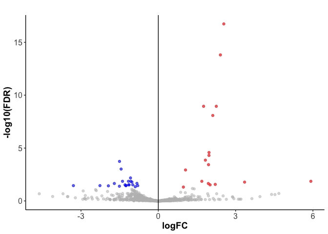
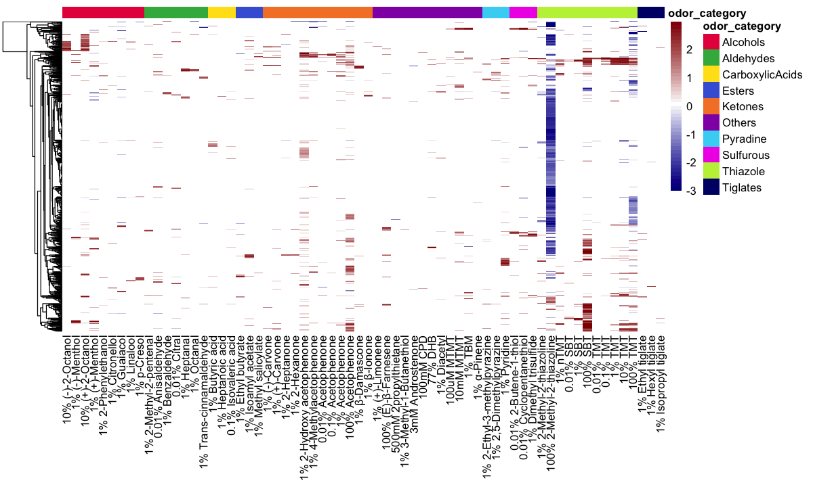
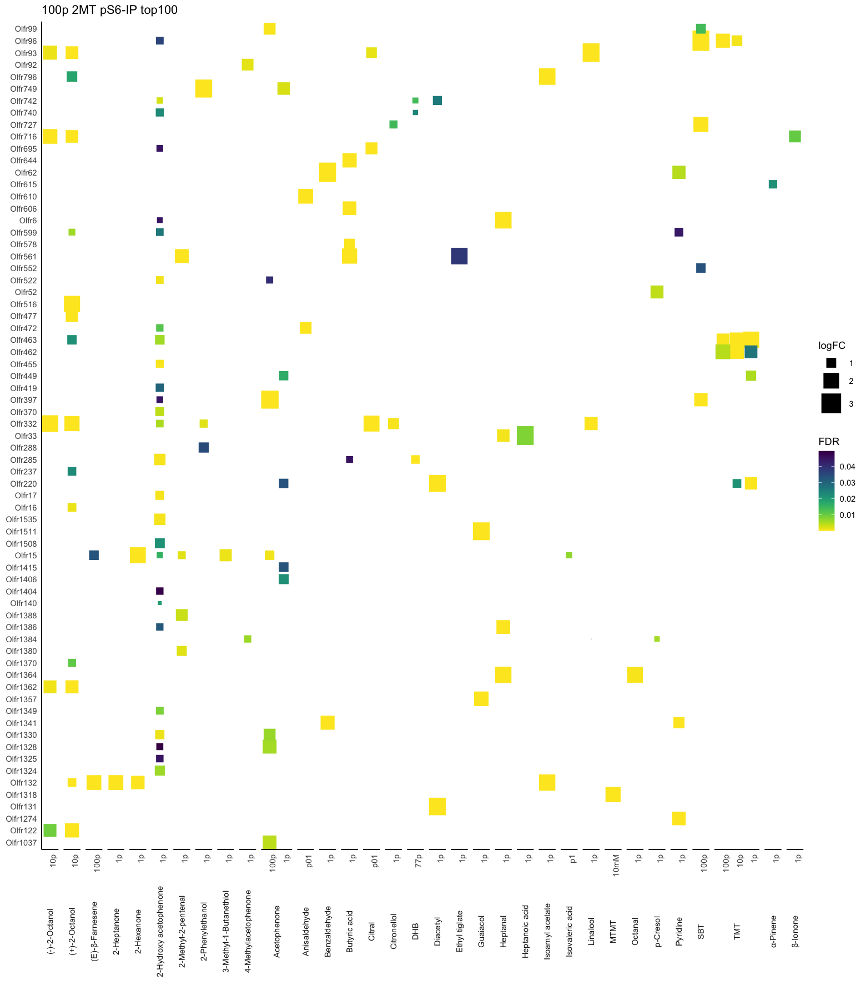

Justice (Hsiu-Yi) Lu
PhD Candidate at Duke University
Exploring and measuring smell
Differential gene expression data
The data table below is prepossessed by DEseq2 to calculate gene-level differential expression.
## ensembl_gene_id logFC FDR No1 No2 No3 ST1 ST2 ST3 id
## 1 ENSMUSG00000059069 2.5448640 6.676352e-65 144 298 249 1299 1764 1605 Olfr749
## 2 ENSMUSG00000053815 2.4720328 2.460729e-21 40 100 54 388 421 407 Olfr744
## 3 ENSMUSG00000075200 2.1649039 2.596337e-17 49 62 55 356 255 285 Olfr1044
## 4 ENSMUSG00000049528 1.7708260 2.680831e-09 29 57 46 183 189 155 Olfr429
## 5 ENSMUSG00000050028 1.0149519 1.436028e-06 187 265 264 500 547 672 Olfr745
## 6 ENSMUSG00000062782 0.9350916 5.008757e-04 291 304 348 1061 569 606 Olfr527From such data table it’s hard to understand what we’re looking for or what’s actually different. Therefore it’s often a good idea to restructure your data table into simpler form. Also keep in mind that when trimming data table, different analysis may require different measurements and structure.
Volcano plot
A simple way to visualize and differential gene expression is through a volcano plot. The volcano plot showcases the genes that are either enriched in mouse given odor (right side) or control (left).  Although there are advantages to volcano plots displaying the differentially expressed genes easily from the DEseq2 output. Volcano plots are one dimensional and only looks at raw fold change values and FDR.
Ways to visualize data
Additionally we can utilize different data analysis and plots to visualize and more importantly ask different questions. A classic way of visualizing how different certain samples are is to utilize the principle component analysis (pca). The PCA is a great tool to visualize a multi-dimensional data. As principle component metric is able to compile X numbers of numeric metrics into a 2 dimensional space. And therefore on a plot, it showcases the closer the samples are the more similarity they have.

Here we can broadly observe that most chemical groups does not have an global impact in driving overall OR activation. However, certain groups of odor are robust enough to deviate, such as the thiazole and Ketones category.
Heatmap
Another interesting way of visualizing such data is to use heatmap. Heatmap is extremely efficient in looking at large datasets and finding certain trends or unique outliers. 
Dotplot search function
Say that we’re interested in a certain chemical, in this case 2-Methyl-2-Thiazoline (2mt). Since 2mt is one of the very few odors in the natural environment that suppress or reduce activation of certain ORs we’re interested in those corresponding ORs. One simple thing you can do is to do a reverse search. Since we know the subset of ORs that are inhibited by 2mt, we’re interested in seeing what odors do those specific ORs also are responding to. We take those ORs are search our data, and a good way of illustrating such idea is to not only look at logFC but also how significant is such result depicted by FDR value.
 This is not the end of the analysis. But hopefully this vignette demonstrated that data analysis is extremely fun and provides multiple angle in how you can visualize and ask different questions in a complex biological dataset.